LAK
Designing Scale and Mythology for an Unreleased Game
LAK was an unreleased game project I worked on for Rescale Games in 2021, under the direction of Jason De Loos.
When I joined the project, a lot of exploration had already been done, but the visual language of the world was still not fully defined. There was no separate art director on the project at that time, so part of my work was to listen carefully to what the director wanted, understand the foundations of the world, and then build a clearer visual system around it.
This became one of those projects where concept art was not only about making images. It was about finding the rules of a world: how it was built, what it worshipped, how it moved, what materials it used, what kind of scale it needed, and how all of that could work inside a game.

When the World Did Not Have a Language Yet
When I came onto LAK, the world already had ideas, but it did not yet have a clear visual language that could hold everything together. I did not want to simply add more shapes or details. I wanted to understand what the project was trying to become.
For me, art direction is not just a style guide. It is a living set of repeating decisions that makes a world feel specific. Materials, scale, silhouettes, color, patterns, symbols and even production limits all become part of that language.
On LAK, I started by reducing the world to a few strong rules: monumental architecture, brutal stone masses, oxidized metal, reddish earth, ritual symbols, large readable forms and energy lines that were part of both the lore and gameplay.


Speed Creates Scale
The gameplay had a huge influence on the environment design. The main character was a very fast robot, moving through the world at extreme speed. That changed the logic of the locations completely.
A normal-sized space would disappear too quickly. Small details would become noise. The architecture had to be enormous, simple enough to read while moving, and strong enough to make the player feel tiny inside it.
That became one of the main emotional goals of the project: scale. The player had to feel like a small machine moving through the remains of a civilization that was much larger, older and more powerful than them.


Designing the World in Motion
Some of the work on LAK was not only about designing still images. Because the game was built around a very fast character, I also had to think about how the world would feel in motion.
In some cases, I was working before the gameplay spaces were fully solved, so I explored rough 3D blockouts and camera flythroughs to test the feeling of scale, routes and spatial rhythm. These were not meant to be final level-design files. They were early visual and spatial sketches: a way to understand how a player might move through a place, where the large architectural masses should sit, and how the environment could support speed without losing atmosphere.
I also made simple mechanism tests for key world elements, such as the opening door and the opening sphere. These animations were very rough, but they helped communicate the idea that the architecture was not static. It had ritual, mechanical and functional behavior. The world had to feel ancient, but still engineered.
Early 3D spatial sketch used to test scale, routes and traversal rhythm.
A Civilization Built Into Natural Giants
The first major location was built around a giant natural formation, almost like a colossal termite mound. I liked this idea because it immediately made the world feel less like generic sci-fi architecture. The civilization was not simply placing buildings on the ground. It was growing, carving and engineering its culture into something that already existed in nature.
That relationship between natural mass and constructed architecture became one of the key ideas. The world had to feel ancient and engineered at the same time. Not organic in a soft way, but not purely mechanical either. It needed that strange mix of earth, ritual, stone, metal and technology.


Energy, Worship and Movement
One of the central ideas of the world was energy. This civilization worshipped a colossal creature that generated or carried enormous power, and the architecture was designed around receiving, storing and distributing that energy.
The metal lines running through the floors, walls and mechanisms were not only decoration. They were part of the world logic. They worked almost like wires, carrying energy through the structure. They also connected directly to gameplay: the robot could use these lines to move even faster.

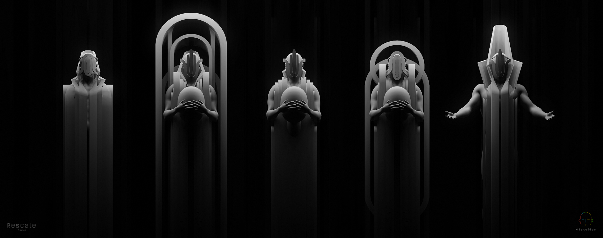
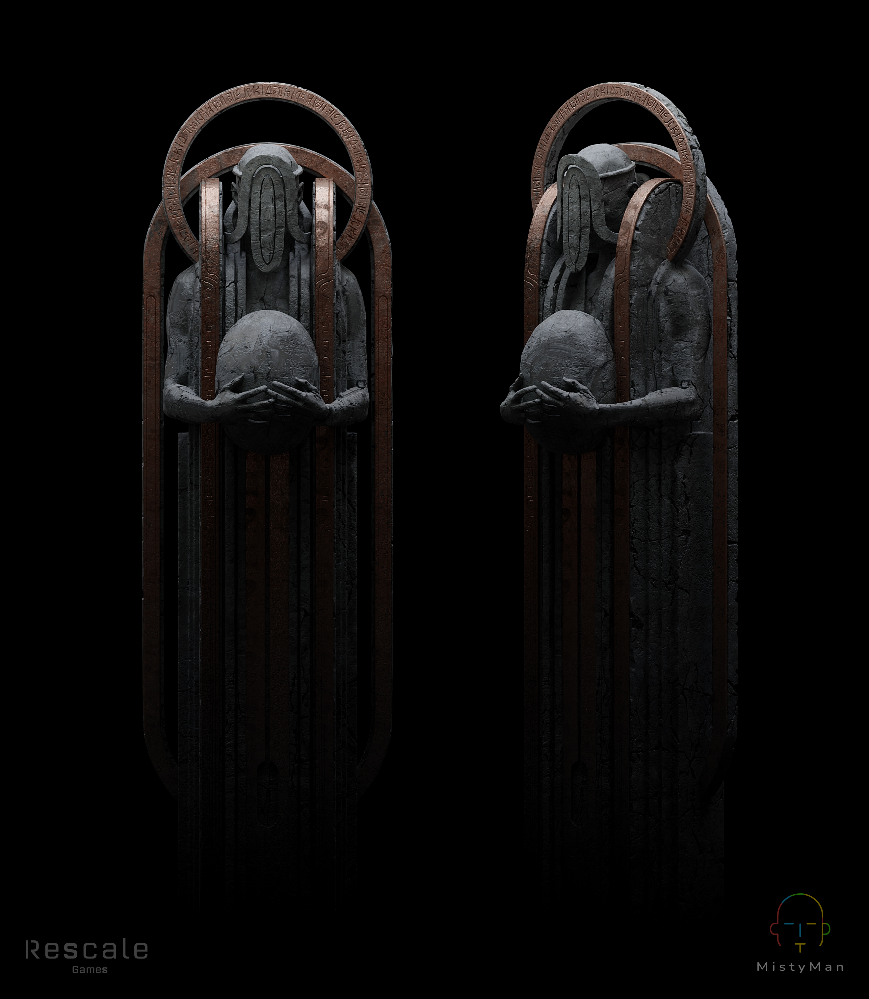
Opening test for a central object connected to the world’s energy, ritual and technology language.
The Material System
Because LAK was a smaller indie project, the visual language had to be controlled. The world could not rely on hundreds of unique materials, props and textures. It needed a simple system that could repeat without feeling cheap.
I built the design around a small set of materials: dark blue-gray stone, oxidized bronze or brass, reddish sand and occasional organic or wooden accents where they made sense. The metal was especially important because it had two roles: it gave the world a contrasting warm color, and it carried the idea of energy moving through the architecture.
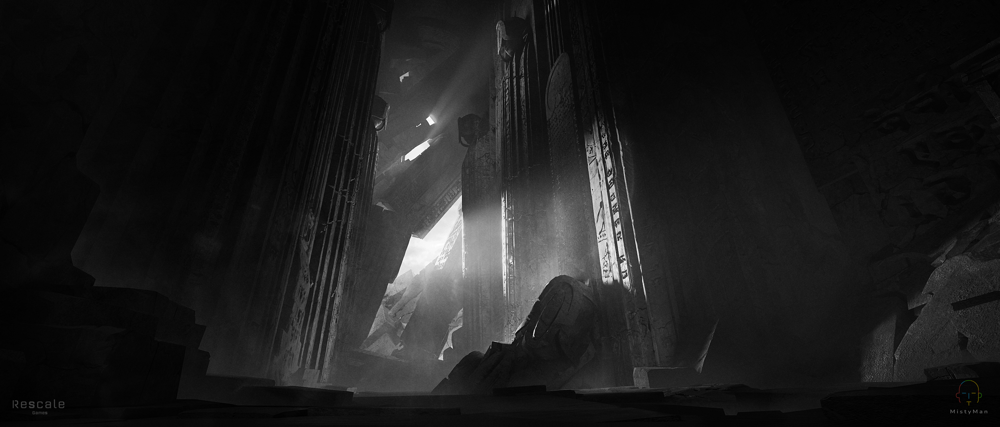
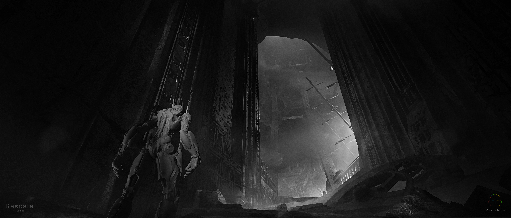


Patterns, Writing and Religious Memory
I wanted the architecture to carry traces of religion and memory. The patterns and writings were based on a mix of astrological symbols, star maps and invented ancient marks. They were placed on stone and metal surfaces to suggest that this civilization studied the sky, worshipped the creature, and built technology through ritual.
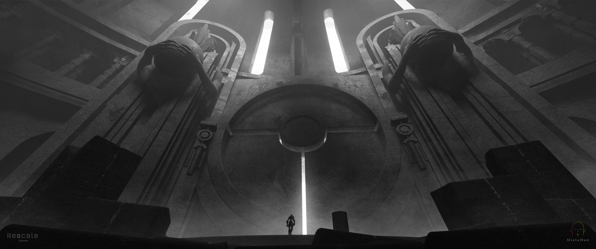
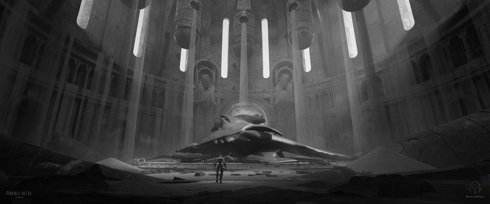

Big Forms, Soft Curves and Brutalist Weight
The architecture was built from large brutal shapes, but I did not want it to become primitive. The solution was to balance heavy stone blocks with controlled curves, cut-ins, metal inserts and engineering details.
The curves were not meant to make the architecture soft. They were used to give the structures a more ancient, ceremonial and slightly alien feeling. The brutal mass gave the world weight. The curves gave it identity.
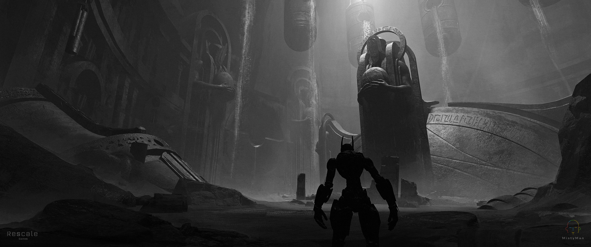
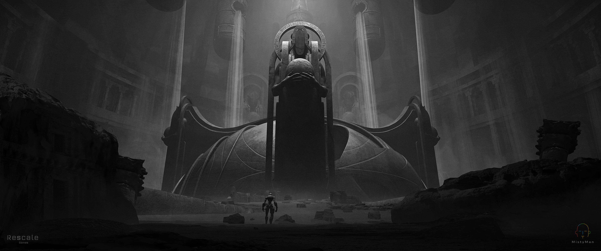
Storage and Interior Keyframes
The storage and interior spaces were designed to feel quiet, heavy and almost sacred. Even when the function was practical, I wanted the scale and lighting to keep the sense that this was part of a much older system.


Alien Ecology Studies
I also explored smaller organic forms for the world. These were not meant to dominate the article, but they help show that the environment language extended beyond architecture. The world needed traces of alien life, dry growth, strange plants and natural forms that could live inside the same material and color system.


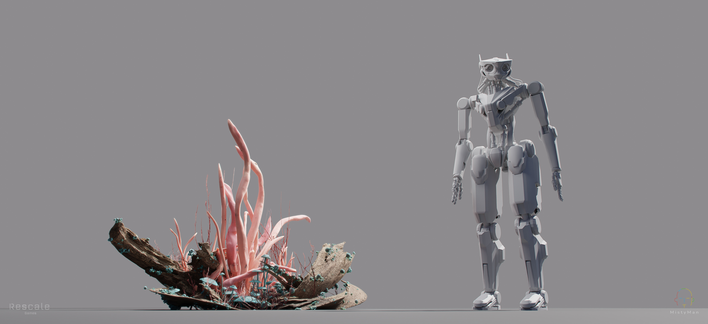

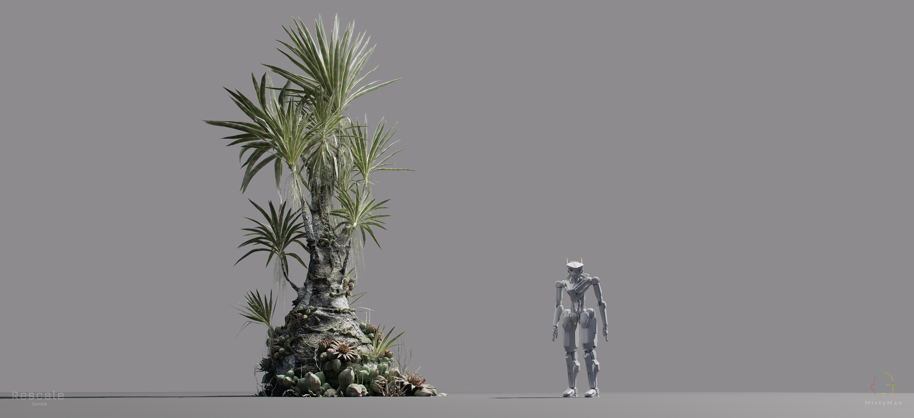


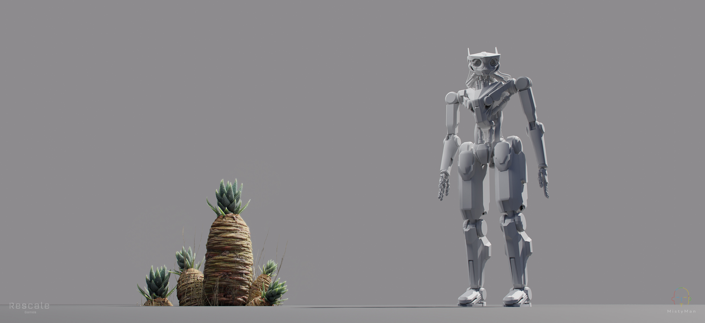
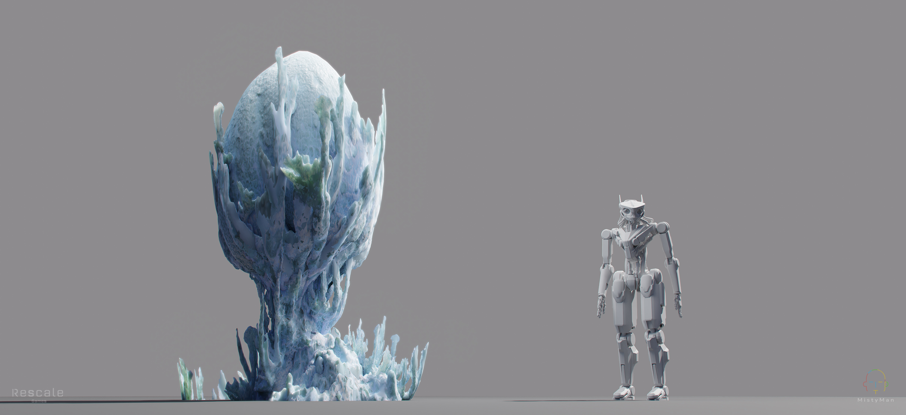
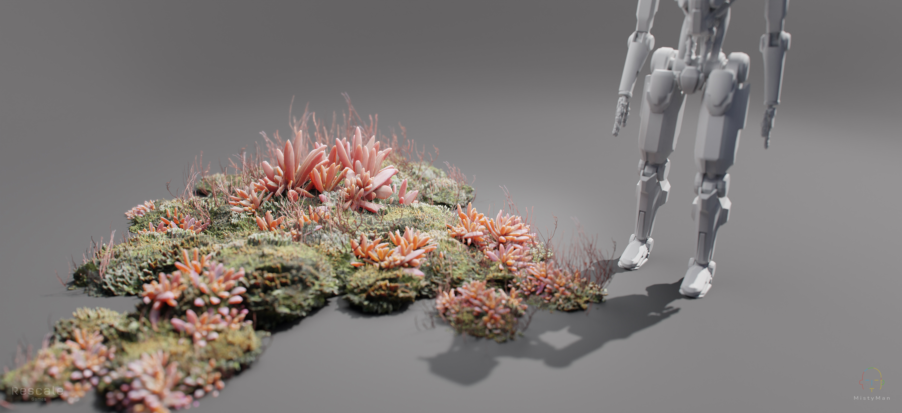
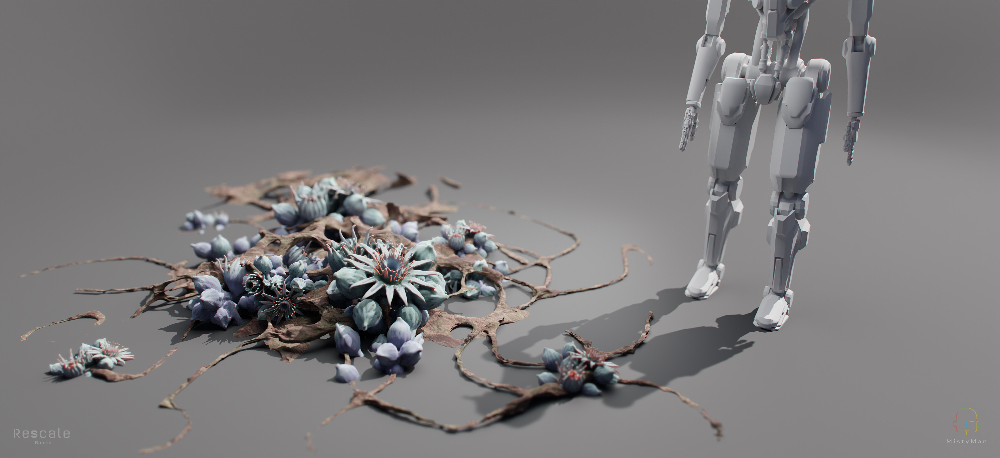

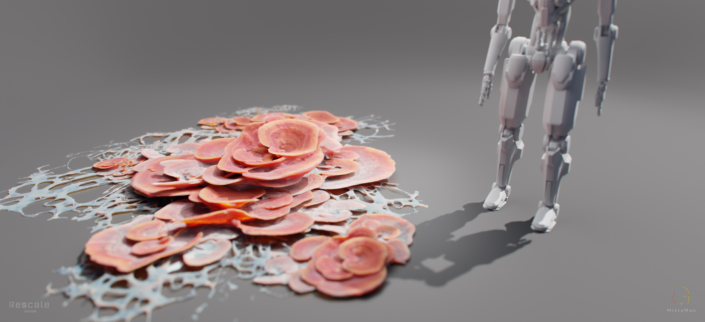

Production Limits as Art Direction
One of the most important lessons from LAK was that budget can become part of the art direction. Since this was a smaller indie project, the world had to be designed in a way that could actually be produced.
That meant fewer materials, repeated patterns, larger forms, less noisy detail and a clear visual rhythm. But I did not want the world to feel cheap. I wanted the limitations to become a language: the same stone, the same metal, the same energy paths and the same symbolic patterns repeating across the architecture until they felt like culture.


What This Project Taught Me
LAK stayed with me because it was one of those projects where the work was not only about finishing images. It was about discovering the world while designing it.
I had to think about scale, movement, religion, material economy, production limits and the feeling of an ancient civilization that had left behind something enormous. I had to make the world readable for a very fast game, but still atmospheric enough to feel mysterious and old.